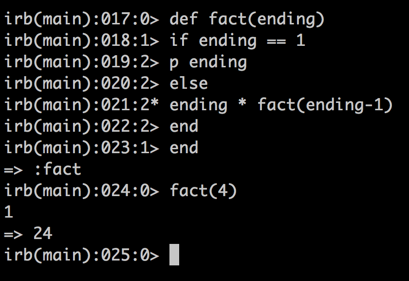

Factoral - Using Recursion
Here's a way to make a method to calculate a factoral number. How it works is that there's a base case. When it's counting down and return it when the count down is at 1. The else line is where it keeps the highest number and run a recusion to get the numbers till it hits 1 on the count down and tally it up and multiply by the original number that was inserted.
